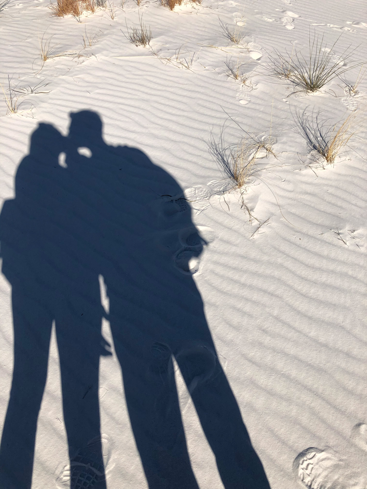
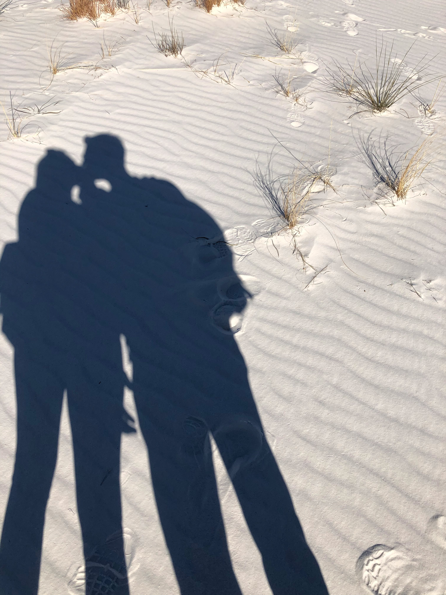

As you all know we met in Seoul, South-Korea in 2019. One of us coming from South Brunswick, New Jersey, the other is from Budapest, Hungary / Paris, France. The chances that we would meet on the 29th of November in 2019 in Korea were extremely low. But we like to think that this is prof that we were meant to be together. As some of you know, we met for the first time on an odrinary Friday night in one of Itaewon's famous bars. One of us was celebrating Thanksgiving with their friends, the other was enjoying her first Seoul night out with a friend. And the magic happened.
Unfortunatly we had to spend 6 months apart, because we could not stay for ever in Korea and with Covid closing borders it was impossible to be physically together. But that 6 months apart reassured us that we wanted to stay together. As hard these 6 months were, our reunion when it finally came was amazing. We spent Christmas together in El Paso, where we currently live. And finally the new year came and with it a new puppy joined our house. The idea of our puppy, named the Kimchi, was born when we were in Korea, where we dreamt about having a cute golden retriever. When we had a chance to adopt this amazing golden we jumped on it immedietly. Our familly is very multinational; we are American, Hungarian, and thanks to our beautiful boy, now Mexican too.
Spending time together in El Paso we decided we wanted to spend the rest of our lives together. The proposal was at the White Sands National Park in New Mexico. After a lot of thinking and planning we realized this would be a perfect place for an intimate wedding-elopement. We have so many great memories here and this place is very close to our hearts.


We wanted to spend this day with our familly and friends as much as possible, but unfortuntaly because of work, visa, and with the border still closed due to Covid, traveling in the next one or two years is still not managable, at least not for a wedding. But to still be able to share this beautiful day with you we decided to broadcast our ceremony. So in a way you all will be with us.